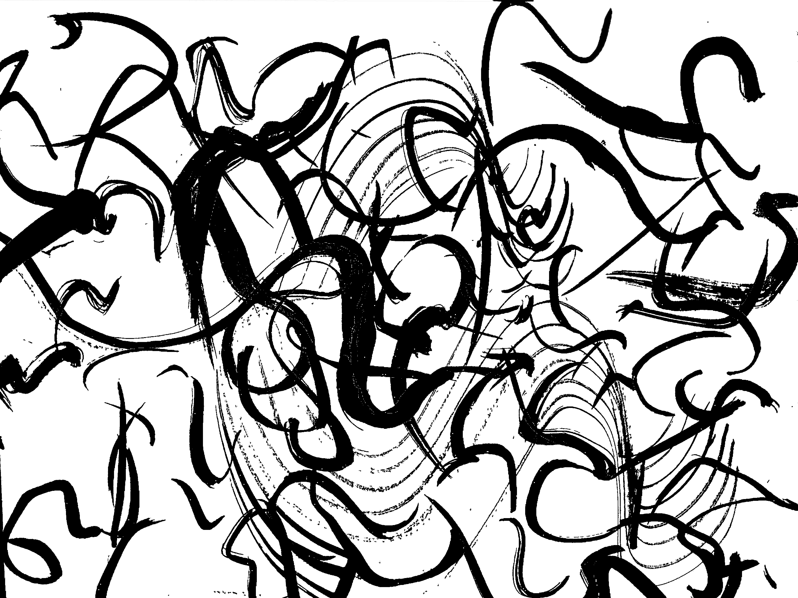

I possess no specialized knowledge of architecture, but I understand that in the Gothic cathedral of the West, the roof is thrust up and up so as to place its pinnacle as high in the heavens as possible-and that herein is thought to lie its special beauty. In the temples of Japan, on the other hand, a roof of heavy tiles is first laid out, and in the deep, spacious shadows created by the eaves the rest of the structure is built.
Nor is this true only of temples; in the palaces of the nobility and the houses of the common people, what first strikes the eye is the massive roof of tile or thatch and the heavy darkness that hangs beneath the eaves. Even at midday cavernous darkness spreads over all beneath the roof's edge, making entryway, doors, walls, and pillars all but invisible.
The grand temples of Kyoto-Chion'in, Honganji-and the farmhouses of the remote countryside are alike in this respect: like most buildings of the past their roofs give the impression of possessing far greater weight, height, and surface than all that stands beneath the eaves.